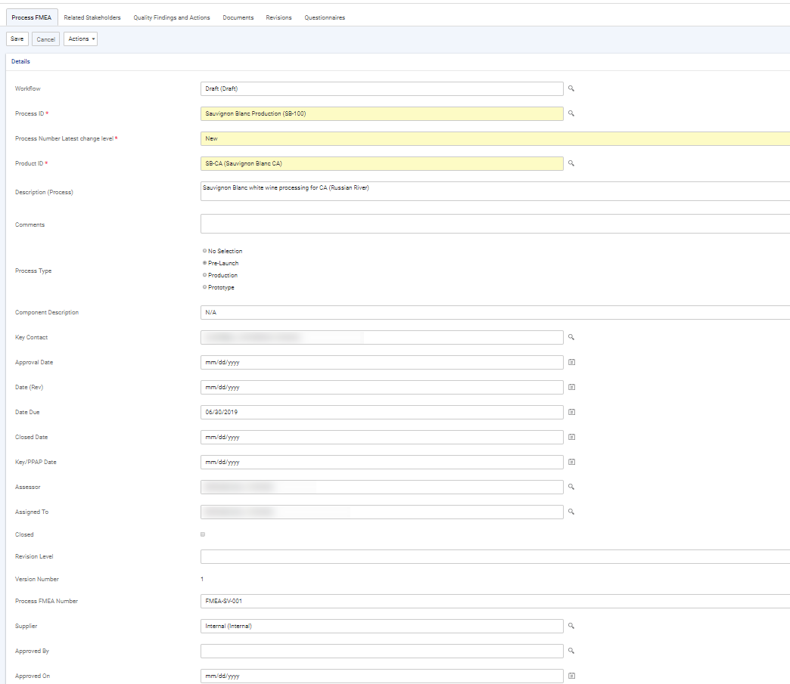
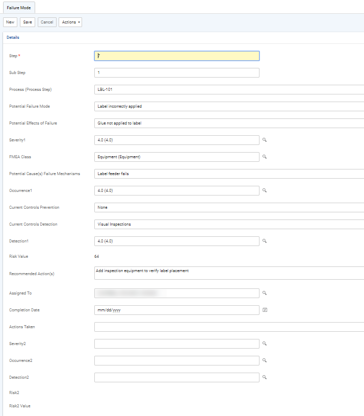
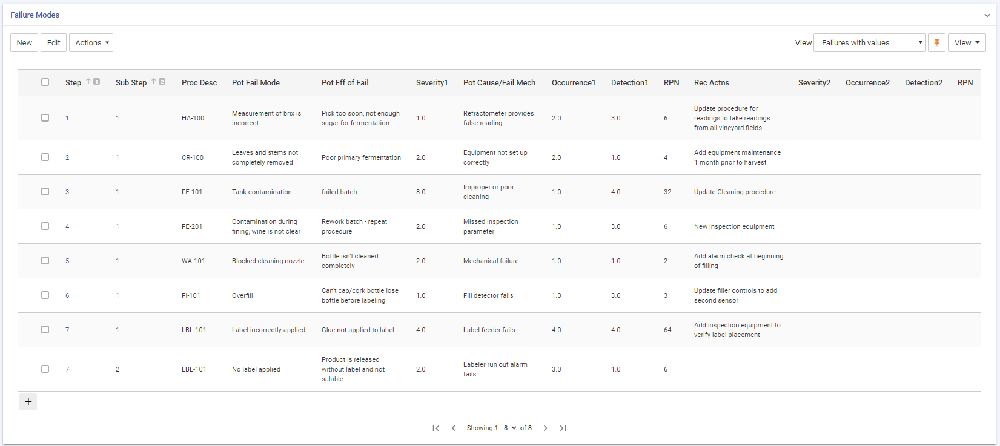

The FMEA allows you to evaluate risk priorities for each step of a process or design, and assign preventive actions to mitigate those risks.
Before you create Process FMEA studies, you must identify the processes that you need to track (see Capturing Production Processes). If the process record includes a list of common steps, you can import these steps into a Process FMEA record as the basis of that study.
In the Quality menu click Process FMEA or Design FMEA, as applicable.
Record information about the FMEA:

Record the risk assessment of each step:
To import steps from the Production Process, choose Actions»Import Process Step, and then open the step to record the assessment details.
To create new steps or substeps, click New in the Failure Modes section.

Once you have completed the assessment of a step, the RPN is calculated as Severity x Occurrence x Detection. You can sort the steps by the RPN to identify those that are at highest risk in order to prioritize your action plan.

On the Related Stakeholders tab, identify any internal or external stakeholders from the Stakeholder look-up table.
Use the Findings and Actions tab to view or add corrective or preventive actions. For information about recording an action, see About Findings and Actions.
Use the Documents tab to link an external file to the record to provide easy access to the file (for more information, see Linking or Importing a Document).
The Revisions tab displays all versions of the FMEA record.
To create a new version of the FMEA, choose Actions»New Version. The new version opens, and the previous version is marked Closed and added to the Revisions tab. Previous versions of a FMEA are locked and can be viewed but not edited. The new record is linked to all the findings and actions that were linked to the old record.
The Questionnaires tab allows you to associate questionnaires with a record. For information about creating and administering questionnaires, see Questionnaires.
The Letters tab allows you to view past letters or generate new letters to employees. Form letters are stored in the LettersTemplate look-up table. For information about creating letters, see Generating a Letter.